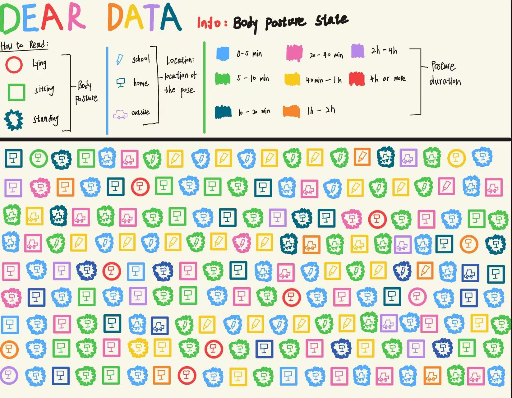
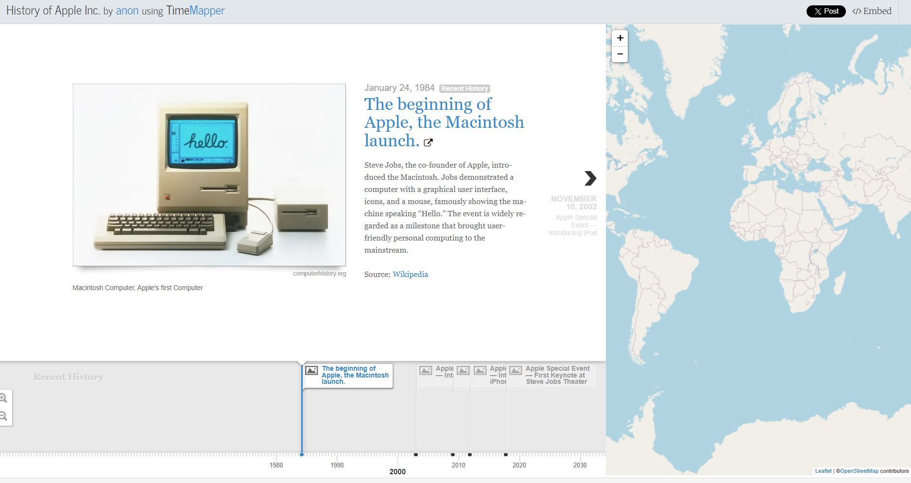
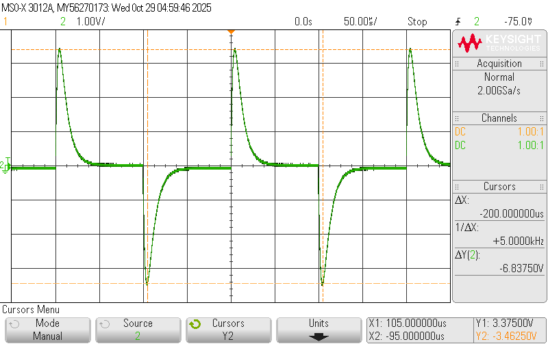
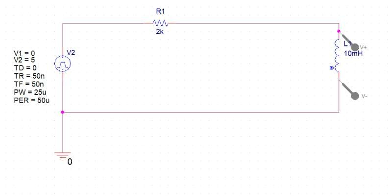
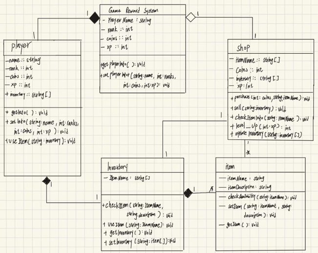
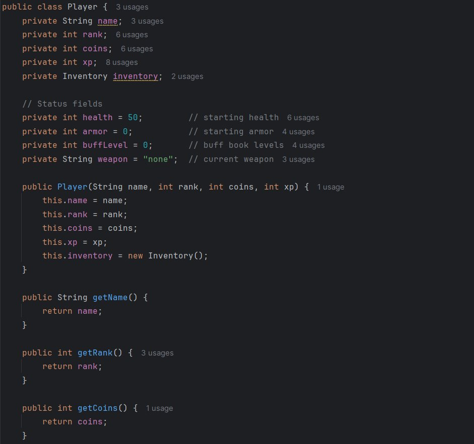
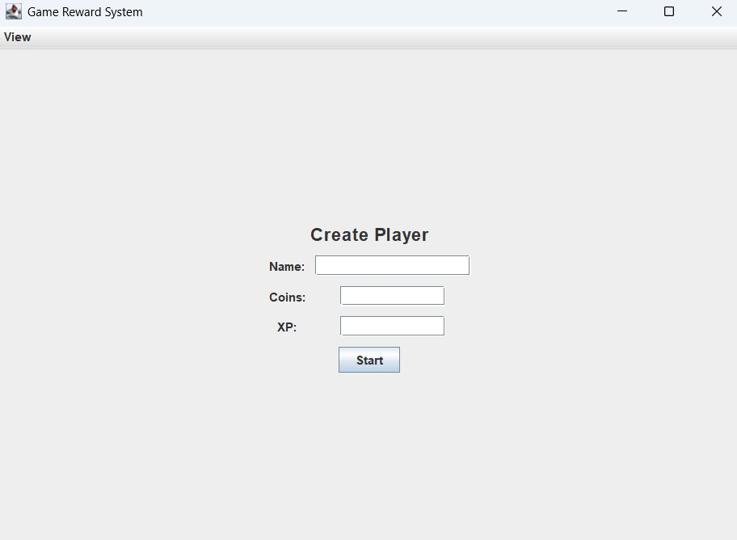
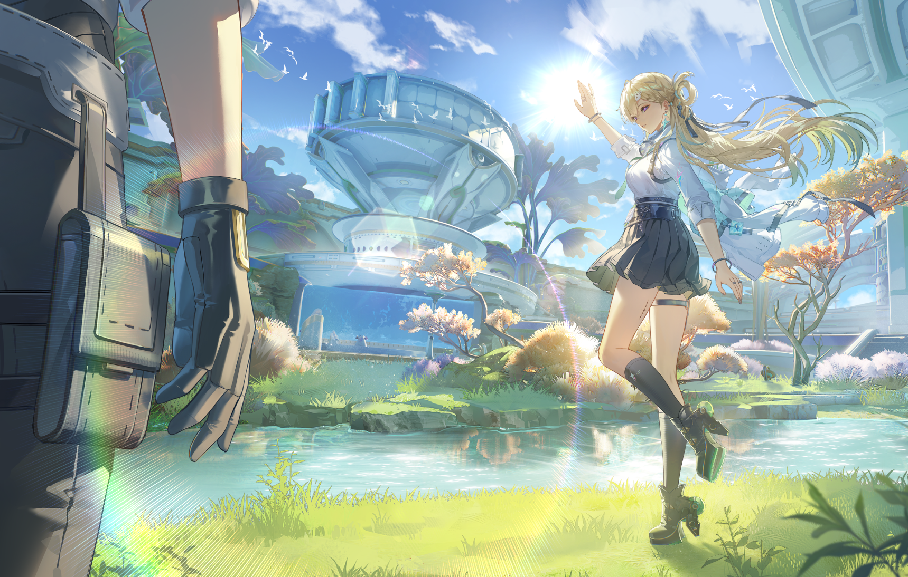
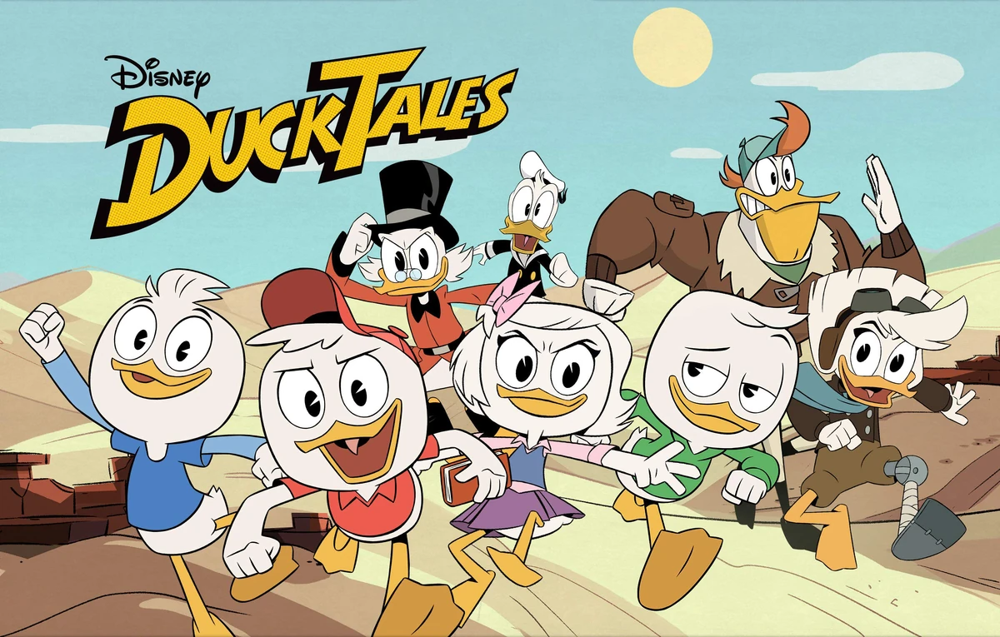

"The Dark Side of the University" is a serialized collection of short stories I have authored. If you find the annotations on this page make the text difficult to read, please navigate to the "Others" section.
If you want to see detail about this 3d model, please click here








